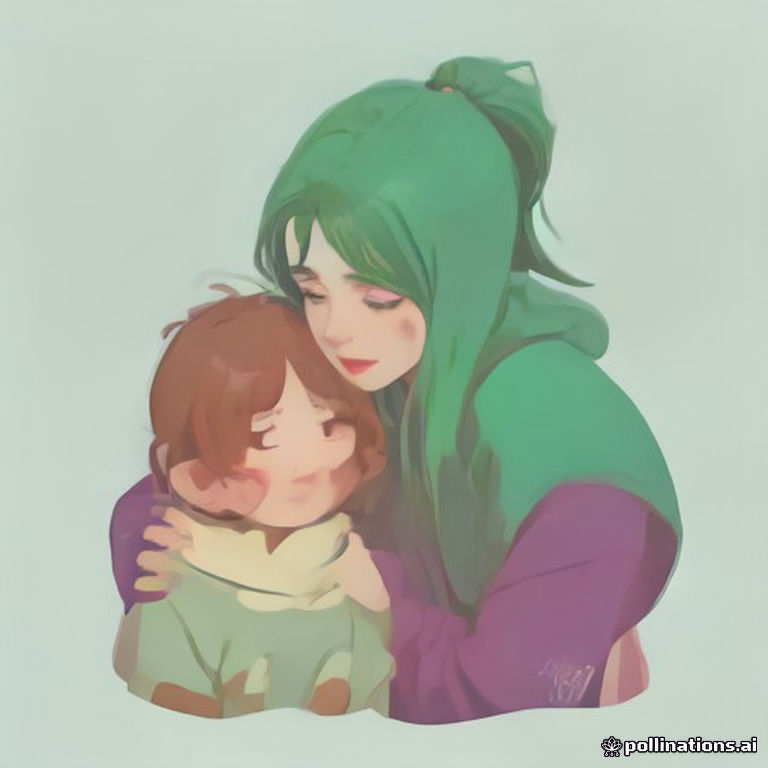
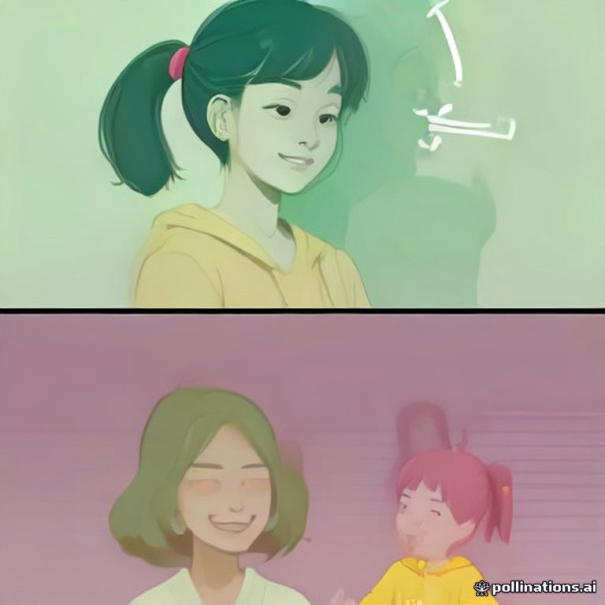
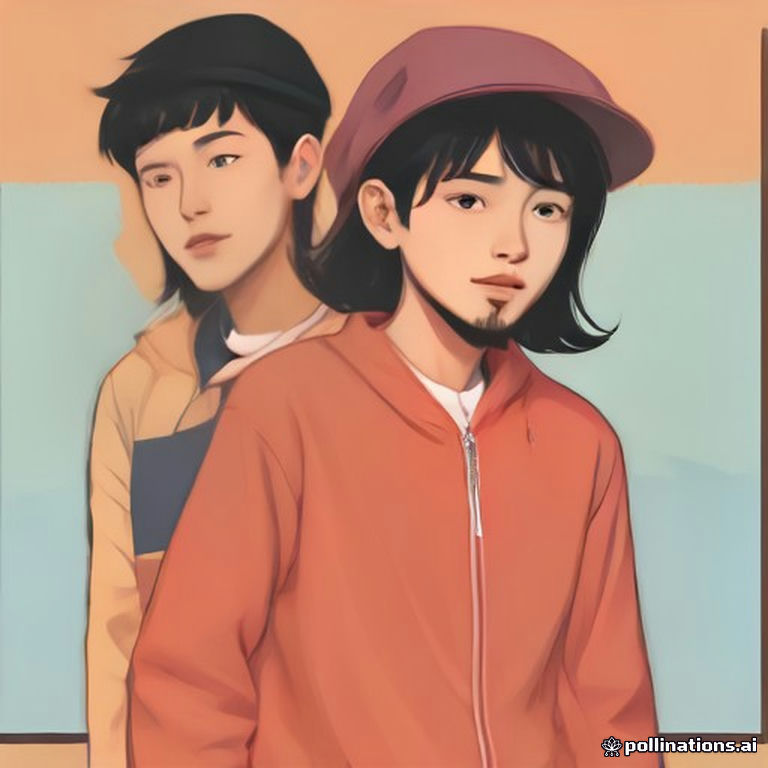
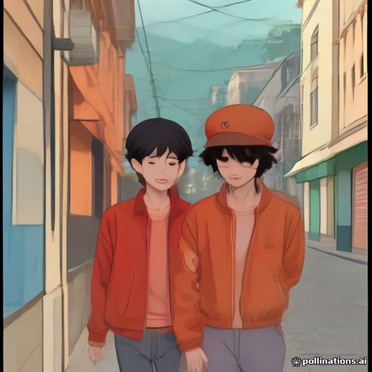

일기 아침에 출근하자마자 키보드에 커피를 쏟았다. 노트북이 꺼지면서 오후 발표 자료가 다 날아간 것 같아 식은땀이 났다. 다행히 팀장님이 어제 공유 폴더에 올려 둔 백업 파일을 찾아 주셨다. 발표는 무사히 끝났고 다들 박수를 쳐 줬다.
정답 사건 커피를 쏟음 / 발표 자료가 날아감 / 팀장이 백업 파일을 찾아 줌 / 발표를 무사히 마치고 박수받음
주인공 특징 검은 네모 안경, 파란 셔츠
제목 커피로 시작된 하루 · character 30대 남자, 짧은 머리, 검은 네모 안경, 파란 셔츠
| 컷 | 해설 | 대사 | 장면 |
|---|---|---|---|
| 1 | 아침 출근하자마자 커피를 쏟았다. | 아이고, 저런! | Early office, man pouring coffee onto keyboard, surprised expression, laptop screen darkening, close-up of spilled coffee |
| 2 | 단순한 사고가 발표 자료를 산산이 | 퇴근통이야? | Laptop shutting, documents flying up, man dripping sweat, co-workers watching worried, office in mid-morning chaos |
| 3 | 다행히 백업이 있었고 | 감사합니다, 팀장님! | Team leader pointing to backup folder on screen, man relieved, colleagues sigh less, office light dims to night |
| 4 | 성공적으로 발표 끝났고 | Man confidently presenting, audience clapping, night lights, man smiling, coffee cup beside laptop |
일기 비가 그친 오후에 강아지 콩이랑 산책을 나갔다. 콩이가 갑자기 흙탕물 웅덩이로 뛰어들었다. 말리려다 나까지 미끄러져서 둘 다 진흙투성이가 됐다. 집에 와서 같이 목욕하고 나니 콩이가 내 무릎에서 잠들었다.
정답 사건 강아지와 산책 / 강아지가 웅덩이에 뛰어듦 / 둘 다 진흙투성이 / 같이 목욕 후 강아지가 잠듦
주인공 특징 긴 생머리, 노란 우비
제목 땅콩과 물결 · character 20s woman with long straight hair, yellow raincoat
| 컷 | 해설 | 대사 | 장면 |
|---|---|---|---|
| 1 | 비가 그친 오후, 산책을 나갔어요. | 오늘은 날씨가 좋아요! | woman in bright yellow raincoat walking in a sunny park, dogs' leash in hand, wide smile, camera at eye level |
| 2 | 콩이 급히 흙탕물에 뛰어들었대! | 와, 조심해! | dog Kong jumps excitedly into a muddy puddle, splashing water everywhere, woman laughing, background trees |
| 3 | 결국 저와 콩이 같이 진흙투성이! | 아, 벌써 진흙 밟았네! | woman slipping on mud, both muddy and soaked, arms flailing, Kong standing proudly beside her, camera tilted down |
| 4 | 집에 와서 함께 목욕, 콩이는 무릎에서 잠들었어요. | 잘자, 콩이 | inside cozy living room, woman bubbles in bath, Kong sleeping on her knee, sunlight filtering through window, calm vibe |
일기 저녁에 성가대 연습이 있었는데 악보를 집에 두고 왔다. 옆자리 집사님이 악보를 같이 보자고 하셔서 나란히 앉아 불렀다. 그런데 내가 높은 음에서 삑사리를 내는 바람에 다 같이 웃음이 터졌다. 연습 끝나고 다 같이 붕어빵을 사 먹었다.
정답 사건 악보를 두고 옴 / 옆 사람과 악보를 같이 봄 / 높은 음에서 실수해 다 같이 웃음 / 연습 후 붕어빵을 먹음
주인공 특징 동그란 안경, 보라색 카디건
제목 악보 잃어버림 · character 50대 여성, 단발 머리, 동그란 금테 안경, 보라색 카디건
| 컷 | 해설 | 대사 | 장면 |
|---|---|---|---|
| 1 | 저녁 성가대 연습… | 악보를… | Older woman at choir practice, holding a music sheet, frowning, stage lights bright, group of singers behind |
| 2 | 집사님이 함께 하자 | 같이 들을까요? | Sister Josie offers sheet, woman looks surprised, two women sit side by side, casual setting, close-up of hands |
| 3 | 흥미로운 고음 | 오, 죄송합니다! | Woman hits high note, blouse flaps, her face turns red, everyone bursts into laughter, camera shows joyful chaos |
| 4 | 연습 후 붕어빵 | Group buys 붕어빵 at street vendor, all laughing, woman smiles, vendor offers hot buns, sunset backdrop |
일기 장보기 목록을 냉장고에 붙여 둔 채 마트에 갔다. 기억을 더듬어 카트를 가득 채웠다. 집에 와서 목록을 보니 정작 제일 필요했던 우유만 빠져 있었다. 결국 슬리퍼를 신고 편의점까지 다시 뛰어갔다.
정답 사건 목록을 두고 마트에 감 / 기억으로 장을 봄 / 우유만 빠진 걸 알게 됨 / 편의점에 다시 감
주인공 특징 곱슬머리, 회색 후드티
{"title":"우유를 못 찾다","character":"40대 남자 곱슬머리, 회색 후드티","panels":[{"scene":"middle-aged man with curly hair wearing gray hoodie, holding a shopping list on fridge, standing at market entrance, smiling, camera medium shot","caption":"장보기 리스트를 냉장고에 붙이고 마트에 갔다","dialogue":"목록 따라 구입해요!","},{" :"scene" ,"content":"cart full of groceries, man pointing at items, confused look, shop background, close-up on hands with varied items","caption":"기억을 더듬어 가득 채운 카트","dialogue":"우유는 언제?","},{" :"scene" ,"
일기 공원에서 딸아이에게 처음으로 두발자전거를 가르쳤다. 뒤를 잡아 주다 손을 놓자마자 아이가 넘어져서 울었다. 반창고를 붙여 주고 한 번만 더 해 보자고 달랬다. 해 질 무렵에는 아이 혼자서 공원 한 바퀴를 돌았다.
정답 사건 딸에게 자전거를 가르침 / 손을 놓자 넘어져 욺 / 반창고를 붙이고 달램 / 아이 혼자 한 바퀴를 돎
주인공 특징 포니테일, 초록색 맨투맨
제목 첫 자전거 · character 30s mother with ponytail, green hoodie, supportive smile
| 컷 | 해설 | 대사 | 장면 |
|---|---|---|---|
| 1 | 첫 자전거 레슨 시작 | 자, 편하게 앉아봐. | Mom stands beside child's bike, explaining, child excited, park trees in background |
| 2 | 아이 울음에 마음 아프다 | 아앗! | Child falls, mom reacts shock, child cries, mom kneels, applies sticker |
| 3 | 해질 무렵 도전 성공 | 한 번 더 해! | Mom encourages, child mounts bike alone, starts pedaling, sunset glows over park |
| 4 | 엄마의 자부심이 피어오른다 | 잘했어! | Child completes a loop, mom watches proudly, sun sets, feel of accomplishment |


일기 친구랑 북한산에 올랐다. 중턱에서 다리가 너무 아파 그냥 내려가자고 했다. 친구가 가방에서 초콜릿을 꺼내 주면서 조금만 더 가자고 했다. 정상에서 본 노을이 너무 예뻐서 올라오길 잘했다고 생각했다.
정답 사건 친구와 등산 / 중턱에서 포기하고 싶어 함 / 친구가 초콜릿을 주며 격려 / 정상에서 노을을 봄
주인공 특징 빨간 모자, 주황색 바람막이
제목 산 길, 노을, 초콜릿 · character 20s male, red hat, orange windbreaker, short beard.
| 컷 | 해설 | 대사 | 장면 |
|---|---|---|---|
| 1 | 지날수록 다리가 아파 | 아픈데 올라가야돼? | young man standing at middle trail, grimace of sore leg, friend beside him holding chocolate box |
| 2 | 친구의 달콤한 해결책 | 다음엔 초콜릿 보충해! | friend offering chocolate, man looking surprised, both laughing, background steep path |
| 3 | 노을이 감동을 더한다 | 정상에서 더 보기 좋다! | both at summit, man gazing at vibrant sunset, friend taking photo, backdrop of mountains |
| 4 | 상당히 올라오서 뿌듯 | 올라올랐다는 보람이 있다 | they walk down, sharing chocolate, smiling, scenery fading, man reflecting on effort |


일기 엄마 생신이라 처음으로 케이크를 직접 구웠다. 오븐 온도를 잘못 맞춰서 시트가 새까맣게 탔다. 급하게 빵집에서 시트를 사 와서 생크림과 딸기로 꾸몄다. 엄마가 세상에서 제일 맛있는 케이크라며 웃으셨다.
정답 사건 엄마 생신 케이크를 구움 / 시트가 탐 / 빵집 시트로 다시 꾸밈 / 엄마가 기뻐함
주인공 특징 양갈래 머리, 분홍색 앞치마
제목 행복한 생신 케이크 · character teen girl with double ponytails, pink apron, bright smile
| 컷 | 해설 | 대사 | 장면 |
|---|---|---|---|
| 1 | 사랑스러워서 손수 케이크를 만들었지 | 우리 엄마를 위해서! | teen girl in kitchen mixing batter, excited face, apron on, countertop with ingredients |
| 2 | 어린 시절 기록마저 잊지 못했어 | 오븐 온도 맞춰야지. | she puts batter in oven, checks timer, slight frown, oven door closed |
| 3 | 시트가 새까맣게 타버렸어! | 아이고, 못 먹어지겠다! | oven timer rings, girl opens door, cake is burnt black, panicked expression, crumbs everywhere |
| 4 | 마지막 수선으로 완성! | 엄마, 맛있어? | she at bakery buying sheet, back home, spreads whipped cream and strawberries, mom smiles, girl proud |
일기 피곤했다. 그래도 저녁에 끓여 먹은 라면은 맛있었다.
정답 사건 피곤함 / 저녁에 라면을 먹음
{"title":"라면 전복기","character":"middle-aged man with gray hair, plain shirt, tired but smiling, discreet scar on right cheek","panels":[{"scene":"man lying on couch, slumped with a bowl of ramen, expression of exhaustion, couch in a cluttered living room, camera close-up on face","caption":"함께 잠꼬대, 졸이야 잠을 못쉬겠어","dialogue":"라면이 나를 구해줘서 고마워!","},{" :":" }] }
일기 저녁에 친구한테 미안하다고 문자를 보냈다. 사실 점심에 사소한 일로 친구랑 말다툼을 했었다. 오후 내내 마음이 불편해서 일이 손에 안 잡혔다. 문자를 보내자마자 친구가 전화를 걸어 와서 웃으면서 화해했다.
정답 사건 점심에 친구와 말다툼 / 오후 내내 마음이 불편함 / 저녁에 사과 문자를 보냄 / 친구 전화로 화해
주인공 특징 갈색 단발머리, 하얀 블라우스
제목 우정의 치유 · character 20대 여성, 갈색 단발머리, 흰 블라우스, 화사한 미소
| 컷 | 해설 | 대사 | 장면 |
|---|---|---|---|
| 1 | 친구에게 사과문자를 보냈다 | 미안해요. | Young woman sitting at a cozy café table, phone in hand, looking apologetic, cozy lighting |
| 2 | 점심때 작은 말다툼 후 하루가 지워질 줄 몰랐다 | She looks distressed, poking at her chest, cheeks flushed, awkward coffee swirling in background | |
| 3 | 전화가 울리고, 웃음이 전해진다 | 정말 미안해, 화해할게! | Her phone buzzes: a call icon, she hesitates then picks up, surprised expression, phone glowing |
| 4 | 우정은 가장 빠르게 회복된다 | Both laughing, hugging through the phone screen, bright sunshine through café windows |
일기 하루 종일 뭔가 허전하고 쓸쓸했다. 창밖에는 비가 내렸다. 오래된 사진첩을 넘기다가 돌아가신 할머니 생각이 났다. 할머니가 해 주시던 김치전이 먹고 싶어 직접 부쳐 먹었더니 마음이 조금 나아졌다.
정답 사건 비 오는 날 쓸쓸함 / 사진첩을 봄 / 할머니 생각이 남 / 김치전을 부쳐 먹고 나아짐
제목 비 오는 김치전의 온도 · character 중년 남성, 짧은 회색 머리, 검은 가죽 재킷, 주머니에 주머니 가득 종이 노트
| 컷 | 해설 | 대사 | 장면 |
|---|---|---|---|
| 1 | 비는 세상은 허전해 보이죠 | 아빠, 비가 와서... 안 좋아요. | Middle-aged man looking at a flickering TV, empty living room, rain outside, his expression wistful, hands cross behind back |
| 2 | 할머니 떠올라 다시 한 번 | 그때 그 맛이 그리워요. | Man opening an old photo album, photo of grandmother smiling, his face softens, close-up on album cover |
| 3 | 그 손맛을 찾아서 | 신선한 김치 넣어요! | Cooking scene in a rustic kitchen, man flicks pan, steam swirling, his face determined but playful, spoonful of kimchi on the pan |
| 4 | 김치전 한 입이면 마음도 비가 그친다 | 이게 바로 위로네요. | Man sitting at the table, plate of kim치전, smiles broadly, light in the room, rain still outside but bright heart |